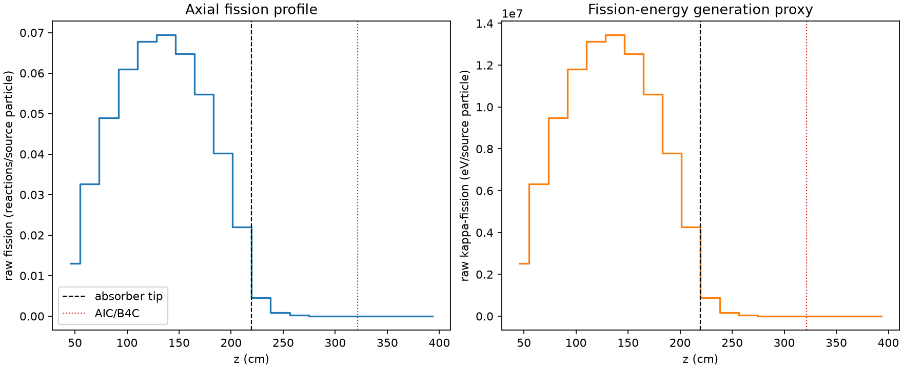
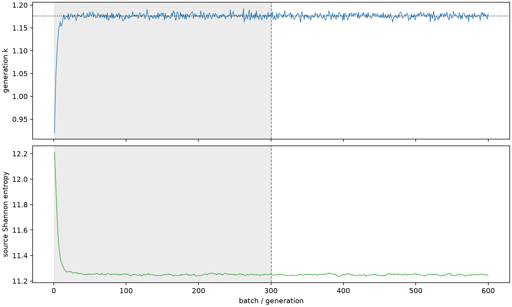

| field | value |
|---|---|
| experiment | V2-ADVISOR_PILOT8-0006 |
| k | 1.1761592103994896 |
| MC standard error | 0.0001821943272109561 |
| seconds | 1277.144628162001 |
| acceptance | not_assessed |
| convergence | review_required |
Completed is output integrity only; physical and statistical review required. Zero tallies do not prove zero production or zero uncertainty.
| diagnostic | value |
|---|---|
| geometric fuel voxels | 5280 |
| zero fission tally voxels | 757 |
| low signal fuel voxels | 1739 |
| low signal fission share | 7.049724955749785e-05 |
| low signal kappa share | 7.052917537708609e-05 |
| important fission share | 0.9501412984856886 |
| previous filter included | 3541 |
| duration estimate s | 1562.5173488400023 |
| actual minus estimate s | -285.3727206780013 |
| fission relative MC error | statistics |
|---|---|
| all_geometric_fuel | {"voxels": 5280, "positive_mean_voxels": 4523, "zero_mean_voxels": 757, "undefined_relative_error_voxels": 757, "median": 0.009990286293637468, "p95": 0.9695880780652449, "maximum": 1.0000000000000002} |
| low_signal | {"voxels": 1739, "positive_mean_voxels": 982, "zero_mean_voxels": 757, "undefined_relative_error_voxels": 757, "median": 0.6197140495136345, "p95": 1.0, "maximum": 1.0000000000000002} |
| important_95pct | {"voxels": 2310, "positive_mean_voxels": 2310, "zero_mean_voxels": 0, "undefined_relative_error_voxels": 0, "median": 0.006320994446528447, "p95": 0.009642977602722903, "maximum": 0.011295324228388741} |
| outside_previous_filter | {"voxels": 1739, "positive_mean_voxels": 982, "zero_mean_voxels": 757, "undefined_relative_error_voxels": 757, "median": 0.6197140495136345, "p95": 1.0, "maximum": 1.0000000000000002} |
| kappa_fission relative MC error | statistics |
|---|---|
| all_geometric_fuel | {"voxels": 5280, "positive_mean_voxels": 4523, "zero_mean_voxels": 757, "undefined_relative_error_voxels": 757, "median": 0.00997758791581362, "p95": 0.9694165841036712, "maximum": 1.0000000000000002} |
| low_signal | {"voxels": 1739, "positive_mean_voxels": 982, "zero_mean_voxels": 757, "undefined_relative_error_voxels": 757, "median": 0.6193075312181091, "p95": 1.0, "maximum": 1.0000000000000002} |
| important_95pct | {"voxels": 2310, "positive_mean_voxels": 2310, "zero_mean_voxels": 0, "undefined_relative_error_voxels": 0, "median": 0.006314221365909067, "p95": 0.009633534051499424, "maximum": 0.011281394948270214} |
| outside_previous_filter | {"voxels": 1739, "positive_mean_voxels": 982, "zero_mean_voxels": 757, "undefined_relative_error_voxels": 757, "median": 0.6193075312181091, "p95": 1.0, "maximum": 1.0000000000000002} |
| axial bin | fission share | kappa-fission share |
|---|---|---|
| 1 | 0.027090522135414703 | 0.027091750166764017 |
| 2 | 0.06800701482626471 | 0.06800661783374067 |
| 3 | 0.10203678279524976 | 0.10203603297455965 |
| 4 | 0.1269644397883243 | 0.12696356026618646 |
| 5 | 0.14111973365548858 | 0.14111890971206642 |
| 6 | 0.14451010387987334 | 0.14450886261619275 |
| 7 | 0.13489917359960388 | 0.13489836159484397 |
| 8 | 0.11416288284316409 | 0.11416200895267516 |
| 9 | 0.08377520031583169 | 0.08377467686653929 |
| 10 | 0.04570781532578109 | 0.04570802285387619 |
| 11 | 0.009351427295753877 | 0.009355146723155424 |
| 12 | 0.0018788527818367387 | 0.0018797393886872743 |
| 13 | 0.00038886363029635063 | 0.00038907178851866513 |
| 14 | 8.327689404525801e-05 | 8.33215259862911e-05 |
| 15 | 1.9538089177854122e-05 | 1.9542569933201446e-05 |
| 16 | 3.6557741402578982e-06 | 3.657565836244429e-06 |
| 17 | 4.2134064797391303e-07 | 4.213769719322102e-07 |
| 18 | 1.1614970165407612e-07 | 1.1642503395191808e-07 |
| 19 | 1.1909415109706946e-07 | 1.1902570265288267e-07 |
| 20 | 5.97852527775568e-08 | 5.97727297211642e-08 |
Histories include the inactive-to-active transition at batch 300. kappa-fission approximates fission energy production, not total heat deposition.

